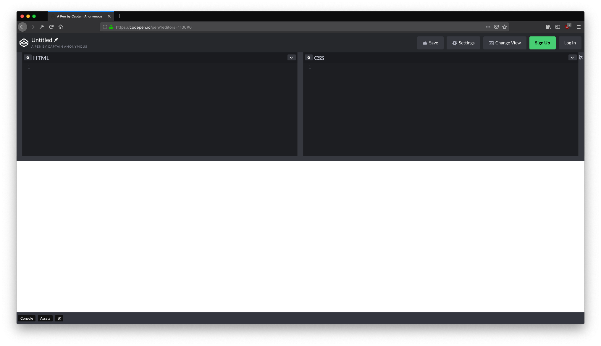

HTML und CSS
Einführung in die Code Welt des Web
über mich:
Was wir heute behandeln werden:
HTML
CSS
Hyper Text Markup Language
<tag>
Inhalt (content)
</tag>
Tags werden nicht im Browser dargestellt.
Dargestellt wird der Inhalt zwischen den Tags.
Jede Website ist mit HTML aufgebaut
Der grundsätzliche Aufbau ist immer gleich:
<!DOCTYPE html>
<html>
<head>
</head>
<body>
</body>
</html>
<!DOCTYPE html>
Beschreibt die Art des HTML Dokuments (in diesem Fall HTML5). Wird benötigt um dem Browser mitzuteilen, wie er das Dokument interpretieren soll.
Wichtig! Hat kein schließendes Tag!
<html>
</html>
Ab hier gehts los mit HTML.
<head>
</head>
Der "Kopf" der Seite. Hier werden Metadaten abgelegt.
Hier kommt auch das CSS, also der Style für die Tags auf der Seite rein. Entweder direkt geschrieben, oder in Form eines Links auf eine *.css Datei.
Weitere Metadaten wären z.B.:
der Titel der Seite, der Autor oder das Icon oder das am Browsertab angezeigt wird.
Kurz: All die Informationen, die NICHT direkt im Browserfenster dargestellt werden.
<body>
</body>
Hier wird jetzt alles drin sein, was tatsächlich im Browser dargestellt wird.
Also viele weitere Tags.
Auch wenn HTML keine Programiersprache im eigentlichen Sinne ist, ist sie doch eine Sprache.
Und wie in jeder Sprache muss man Vokabeln lernen.
Weitere häufige Tags:
<div>
</div>
<span>
</span>
<p>
</p>
<a href="#">
</a>
<img src="pfad/zum/bild.jpg" />
Attribute
Tags können Attribute haben. Die Häufigsten sind Klasse und ID.
<body class="nameDerKlasse" id="nameDerId"></body>
Der Name der Attribute ist fest, hier z.B. class="".
Ihr Wert hingegen ist frei wählbar,
hier z.B. nameDerKlasse.
Aber was machen diese Attribute eigentlich?
Attribute werden für die verschiedensten Dinge benötigt. Ein ganz konkreter Anwendungsfall ist das stylen von HTML Tags.
Und das macht man mit:
CSS
Cascading Style Sheets
Mit CSS werden Gestaltungsanweisungen erstellt.
Hier kommen die Attribute "class" und "id" der HTML Tags ins Spiel.
CSS Selektoren
p {
background-color: white;
}
.nameDerKlasse {
color: pink;
}
#nameDerId {
height: 100vh;
}
Der . vor dem Name sagt aus, dass es sich um eine Klasse handelt.
Das # vor dem Name sagt aus, dass es sich um eine ID handelt.
.nameDerKlasse {
color: pink;
}
Zwischen den geschweiften Klammern {} befinden sich die Anweisungen für das Tag.
Anweisungen teilen sich in die Eigenschaft, wie z.B. color und deren Wert, z.B. pink.
Der Aufbau ist immer:
eigenschaft : wert ;
Das Box Modell
Das Box Modell
Grundsätzlich haben alle Tags eine gemeinsame Eigenschaft: Sie sind rechteckig!
Wir können jedoch nicht bei allen Tags Höhe und Breite bestimmen. Wir unterscheiden generell zwischen Block Elementen und Inline Elementen.
Block Elemente
Block Elemente haben eine von uns festlegbare Höhe und Breite.
Sie können auch einen Innenabstand oder Außenabstand mitbringen.
<div> Tags sind z.B. grundsätzlich Block Elemente.
Inline Elemente
Bei Inline Elementen werden die Maße durch den Inhalt vorgegeben.
Sie ignorieren Angaben wie Höhe (height) oder Breite (width) und richten sich satt dessen nach Ihrem Inhalt.
<span> Tags sind z.B. grundsätzlich Inline Elemente.
Box Modell

Display
Die CSS Anweisung display: bestimmt, wie und ob etwas angezeigt wird. Sie kann folgende Werte bekommen:
Beispiele:
img {
display: none;
}
.inlineElement {
display: inline;
}
div {
display: inline-block;
}
Position
Die CSS Anweisung position: bestimmt die Art der Positionierung des Tags innerhalb der Seite,
Es gibt fünf mögliche Werte für position:
- static
- relative
- absolute
- fixed
- sticky
.statischesElement {
position: static;
}
Ist der Standard, den jedes Tag von Haus aus mitbekommt. Wird also nichts weiter angegeben, kommt diese Positionierung zum Tragen.
Die CSS Eigenschaften top , bottom, left, und right bewirken bei dieser Positionierung nichts.
.relativesElement {
position: relative;
}
Das Element mit dieser Positionierung ist noch im Verhältnis zu anderen Elementen der Seite, die CSS Eigenschaften top , bottom, left, und right werden das Element relativ zu seiner Position innerhalb der Seite verschieben.
.absolutesElement {
position: absolute;
}
Das Element mit dieser Positionierung ist nur mit anderen positionierten Elementen im Verhältnis, aber nicht im Fluss der Seite.
.fixiertesElement {
position: fixed;
}
Das Element steht nur im Verhältnis zum sichtbaren Bereich. Wenn die Seite gescrollt wird, bleibt es fix an der gleichen Stelle und scrollt nicht mit.
.stickyElement {
position: sticky;
}
sticky ist ein recht neuer Wert, der noch nicht von allen Browsern unterstützt wird und nur der Vollständigkeit halber hier mit auftaucht.
Das waren die zwei CSS Anweisungen:
display:
und
position:
Welche gibt es noch?
CSS Anweisungen sind fest definiert und reichen von selbsterklärenden wie color für die Textfarbe über background-color für die Hintergrundfarbe bis hin zu abstrakten wie margin und padding für die Außen- bzw. Innenabstände.
So können zum Beispiel durch die CSS Anweisungen width: und height: die Breite und Höhe eines Block Elements bestimmt werden.
Aber in welchen Maßeinheiten?
CSS Werte und Einheiten
Als mögliche Werte für CSS Anweisungen stehen uns einige Angaben zur Verfügung.
Sie unterteilen sich grundsätzlich in absolute und relative Werte.
Absolute Werte
px für Pixel
cm für Zentimeter, meist für Drucksachen
mm für Millimeter, meist für Drucksachen
pt für Punkte, meist für Drucksachen
Relative Werte
Beispiel:
body {
width: 100vw;
height: 100vh;
}
.erstesElement {
margin-top: 10%;
margin-bottom: 100px;
}
#nameDerId {
font-size: 16px;
padding: 1.5em;
}
Padding und Margin
Die Abstände innerhalb eines Blocks werden mit padding: angegeben.
Abstände zwischen Blöcken werden mit margin: angegeben.
Kurzschreibweise: Padding und Margin
.erstesElement {
margin-top: 10px;
margin-right: 20px;
margin-bottom: 30px;
margin-left: 40px;
}
Ist exakt das Gleiche wie:
.erstesElement {
margin: 10px 20px 30px 40px;
}
Fast geschafft!
Nur noch eine Sache:
Pseudo Klassen!
Was sind Pseudo Klassen?
Pseudo Klassen werden genutzt um einen bestimmten Zustand eines Tags zu beschreiben.
Zum Beispiel:
Wenn der Mauszeiger über ein Element fährt:
.erstesElement:hover {}
Um das erste Tag von vielen anzusprechen:
p:first-child {}
Wenn ein bestimmter Link schon besucht wurde:
a:visited {}
Genug Theorie
Selber machen!
Codepen IO
Um ohne viel Aufwand HTML und CSS auszuprobieren bietet sich Codepen an.
Geht auf codepen.io und clickt links "Start Coding" an.
In dem neuen Fester könnt Ihr als erstes den Editor für Javascript ausblenden:
Clickt dazu den Pfeil ganz rechts oben in der JS Leiste an und wählt "Minimize JS Editor" aus.
Euer Fenster sollte jetzt so aussehen:
In das HTML Fenster:
Hallo Welt!
In das CSS Fenster:
.wrapper {
width: 100%;
height: 100vh;
background: black;
}
h2 {
font-size: 10vw;
color: #FF5E99;
text-align: center;
width: 100%;
padding: 40vh 0 0;
margin: 0;
}
.navigation {
list-style-type:none;
margin: 0;
padding: 0;
}
.navigation li {
display: inline-block;
}
.navigation li a {
color: #008000;
}
Alles was man braucht für eine simple Website ist ein Textdokument mit der Endung .html
Ihr könnt entweder selbst eins erstellen: Bei Windows: rechtsklick->neu->Textdatei und dann die Dateiendung von .txt in .html umbenennen.
Keine Leerzeichen oder Sonderzeichen im Dateinamen!
Oder ihr Ladet die von mir vorbereitete Datei hier herunter.
Diese Präsentation liegt auf goleon.de/html
Diese index.html Datei auf einem Webserver wäre schon eine fertige Webseite.
Eine sehr simple, zugegeben. Aber eine Website.
Danke für die Aufmerksamkeit!
Und nicht vergessen: Wenn Ihr etwas genauer wissen wollt, hilft googeln fast immer weiter!
Cheers!